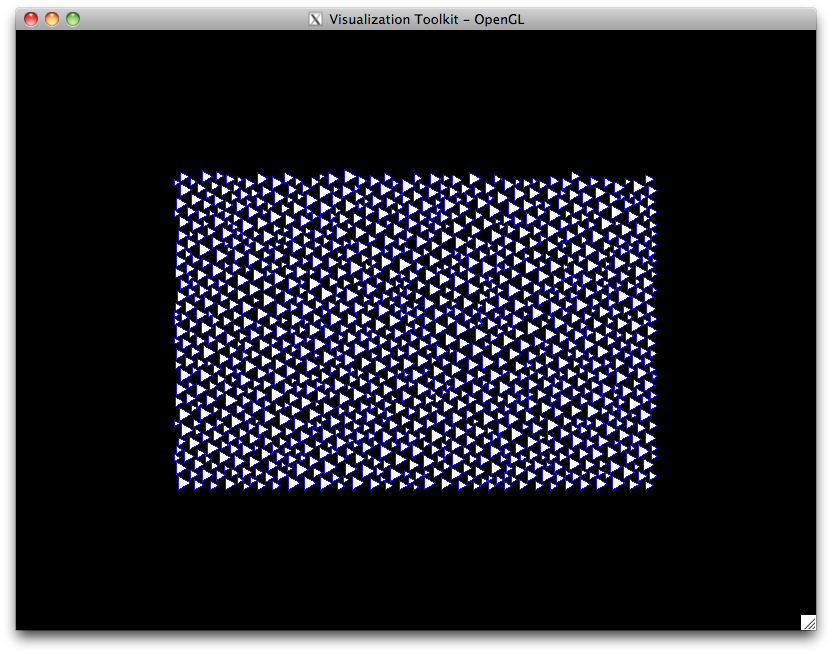
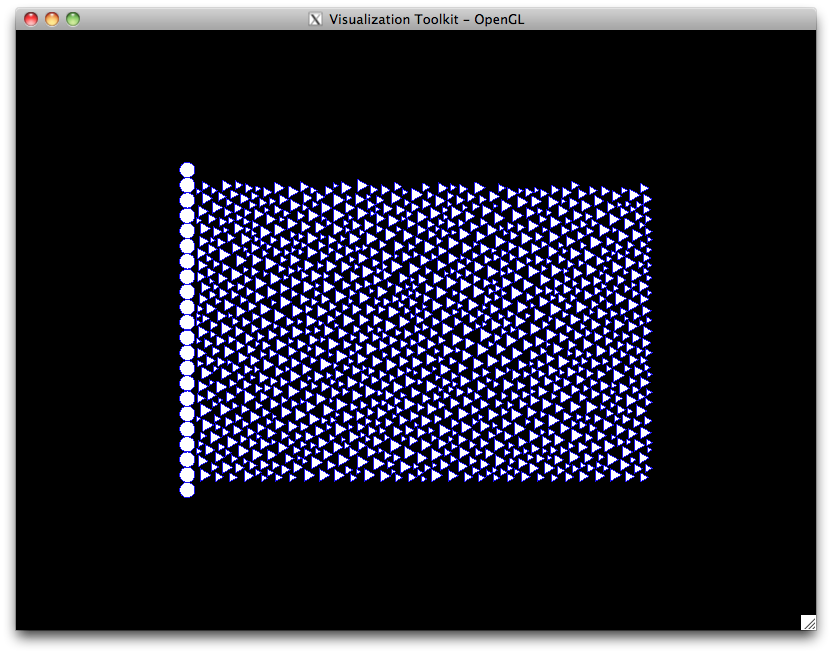

Granular material¶
generation of a list of boundary radii according to a known granulometry
positioning of grains with the generated boundary radii according to a deposit method
creation of the real sample of particles
In the following sections are presented what functions are available within the current version of LMGC90’s preprocessor for each of these steps. Many examples using these functions are available in the examples of LMGC90.
List of radii¶
A list of radii following a given granulometry is generated. The available functions are:
Example:
Let’s say we want to generate a sample of particules which each radius is randomly chosen between two radii. This is done thanks to:
nb_particles = 10000
radius_min = 1.0
radius_max = 2.5
radii = pre.granulo_Random(nb_particles, radius_min, radius_max)
Deposit¶
Once the list of bounded radii is obtained, the next step is to determine where to put grains in space. This is the role of the deposit functions which takes the list of radii as input and give a list of coordinates as output. There are two kinds of deposit function available: loose deposit on a lattice or dense deposit:
2D
3D
Dense deposit of particles are performed minimizing a potential. In our case it is the gravity potential which is minimized.
Warning: to avoid interpenetration between particles, a shrink based on the size of particles is used.
Example:
Using the radii variable generated in previous example, let us deposit it in 2-dimensionnal box:
lx = 150.
ly = 100.
nb_laid_particles, coors, radii = pre.depositInBox2D(radii,lx,ly)
Particle generation¶
avatar corresponding to each particle.2D:
3D
Example:
{kind=link}
Finally the container of avatar must be filled:
mat = pre.material(name='TDURx', materialType='RIGID', density=100.)
mod = pre.model(name='rigid', physics='MECAx', element='Rxx2D', dimension=2)
bodies = pre.avatars()
nb_vertices = 3
for r, c in zip(radii, coors):
body = pre.rigidPolygon(radius=r, center=c, nb_vertices=nb_vertices, model=mod, material=mat, color='BLUEx')
bodies.addAvatar(body)
Wall generation¶
Even if in most cases straight plans are used to define the wall of a box, it is sometimes desired to have a rough wall like a cluster of disks/spheres. Here are the functions to create such a wall in a single line:
Example:
{kind=link}
To complete our example let’s create three walls for the box using the three first functions just to illustrate the differences between them. First the left wall:
max_radius = max(radii)
mut = pre.material(name='TDURx', materialType='RIGID', density=1000.)
left = pre.roughWall(center=[-radius_max, 0.5*ly], theta=-0.5*math.pi, l=ly + 2.*radius_max,
r=radius_max, model=mod, material=mut, color='WALLx')
left.imposeDrivenDof(component=[1,2,3], dofty='vlocy')
bodies.addAvatar(left)
{kind=link}
Then the right wall:
right = pre.fineWall(center=[lx+radius_max, 0.5*ly], theta= 0.5*math.pi, l=ly + 2.*radius_max,
r=radius_max, model=mod, material=mut, color='WALLx')
right.imposeDrivenDof(component=[1,2,3], dofty='vlocy')
bodies.addAvatar(right)
{kind=link}
And finally the bottom of the box:
bottom = pre.smoothWall(center=[0.5*lx, -radius_max], theta=0., l=lx + 2.*radius_max,
h=radius_max, nb_polyg=12, model=mod, material=mut, color='WALLx')
bottom.imposeDrivenDof(component=[1,2,3], dofty='vlocy')
bodies.addAvatar(bottom)
See this file for the complete generation script.